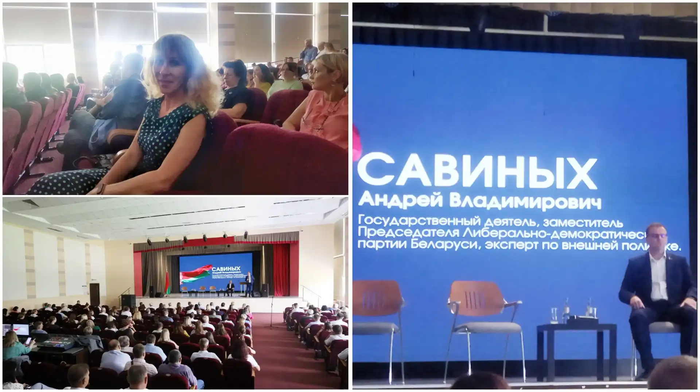

Молодежь РУП «Сертис» РУП «Белстройцентр» в рамках осенней
акции «Обелиски Великой Победы» проводимой
«Белстройцентр-холдинг», навела порядок у Памятника «Прах 2000
мирных граждан».
Памятник представляет собой
мемориальный знак на братской могиле мирных жителей, погибших
от рук фашистских захватчиков в период с 1941 по 1944 год в
лагере «Красные казармы», который был расположен вблизи д.
Речица Брестского района.
Благоустройство памятных мест - это акт уважения и памяти о
тех, кто отдал свои жизни за наше мирное будущее. Это способ
сохранить связь с историей и напомнить всем о необходимости
ценить мир и свободу. Участие в такого рода акциях укрепляет
дух патриотизма и гражданской ответственности, вдохновляя
молодежь на дальнейшие добрые дела.
Коллектив РУП «Сертис» РУП «Белстройцентр» совершил
увлекательную экскурсию в исторический город Пинск. Это
поездка стала прекрасной возможностью узнать больше о
культурном наследии нашего региона.
В ходе
экскурсии мы посетили ключевые достопримечательности Пинска,
такие как Коллегиум иезуитов, пешеходная улица Ленина с
«Бронзовым пинчуком», кафедральный костёл Внебовзятия
Пресвятой Девы Марии, который славится старинным органом,
Полесский драматический театр и другие.
Гид
познакомил нас с богатой историей города, его архитектурой и
традициями. Путешествие подарило множество ярких впечатлений
нашему дружному коллективу. Благодарим всех участников за
позитивное настроение и надеемся на дальнейшие совместные
поездки по родному краю!
В рамках мероприятий, приуроченных к Дню народного единства,
коллектив РУП «Сертис» РУП «Белстройцентр» посетил грандиозную
выставку «Достижения Брестчины», которая проходит в эти дни в
легкоатлетическом манеже.
Города и районы области представили всё, чем мы по праву
гордимся:
промышленность и инновации;
сельское и
лесное хозяйство;
образование и новые поколения;
культура,
традиции и духовные ценности;
достопримечательности и
символы малой родины.
На открытой площадке перед манежем — выставка техники ведущих
предприятий Минпрома: БЕЛАЗ, МАЗ, АМКОДОР, ГОМСЕЛЬМАШ, МТЗ и
других гигантов белорусского машиностроения.
В год 80-летия Победы в Великой Отечественной войне в
БЕЛСТРОЙЦЕНТР-ХОЛДИНГ состоялся трогательный и яркий конкурс
детского рисунка «Под мирным небом Беларуси».
Участие в
нем приняли и дети сотрудников РУП «Сертис» РУП
«Белстройцентр».
В номинации «Приз зрительских симпатий»
победила Ксения Корнейчук. Награждение победителя с вручением
диплома прошло в РУП «Белстройцентр». Участникам конкурса
Радкович Елизавете, Михаилу, Даниилу и Андрею в РУП «Сертис» в
теплой атмосфере также вручены дипломы за участие.
Совместно
с БЕЛСТРОЙЦЕНТР-ХОЛДИНГ благодарим наших маленьких участников
за искренность, талант и преданность мирным идеалам Беларуси!
Коллектив РУП «Сертис» РУП «Белстройцентр» посетил грандиозный
гала-концерт «Кинотеатр «Александрия». Концерт ежегодно
проходит в Александрии на праздник «Купалье» и впервые
отправился в тур по Беларуси. Город Брест – первый в большом
туре.
На сцене выступали известные белорусские артисты:
Анатолий Ярмоленко, Александр Солодуха, группа «Аура», Жанет,
Тео и другие. Ведущий - Александр Олешко.
Программа
концерта – песни и хореографические композиции из всеми
известных советских фильмов.
8 августа ко Дню строителя состоялось выездное спортивное
мероприятие для сотрудников РУП "Сертис" РУП 'Белстройцентр":
соревнование между членами коллектива по боулингу.
Соревнование прошло в дружеской обстановке и каждый смог
продемонстрировать свои навыки. Подобные мероприятия укрепляют
командный дух в коллективе. Благодарим всех, кто принял
участие!
5 августа в рамках запланированных мероприятий ко Дню
строителя в РУП «Сертис» РУП «Белстройцентр» прошел
информационный час с участием приглашенного ветерана труда
Масайло Ирины Анатольевны, ведущего метролога РУП «Брестский
ЦСМС».
Ирина Анатольевна выступила перед сотрудниками с докладом на
тему «Изменения в части метрологического обеспечения в связи с
переходом на новую версию ТР 2025/013/BY».

Идеологический актив РУП "Сертис" РУП "Белстройцентр" принял
участие в обучающем семинаре «Современные вызовы национальной
безопасности: тенденции и способы противодействия», прошедшем
на базе Брестского государственного технического
университета.
В качестве экспертов выступили – белорусский государственный
деятель, эксперт по внешней политике Андрей Савиных, депутат
Палаты представителей Национального собрания Республики
Беларусь Эдуард Северин, а также представители
правоохранительных органов.
На повестке: международные
отношения, информационное противоборство и борьба с
экстремизмом.
Представители коллектива РУП "Сертис" РУП "Белстройцентр"
посетили торжественное открытие Дня города "Берестье-2025",
которое состоялось на площади Ленина. С приветственным словом
и поздравлением с праздником выступил председатель Брестского
городского исполнительного комитета Лободинский Сергей
Николаевич. В рамках торжественного мероприятия состоялся
международный парад оркестров и гала-концерт. С праздником, с
Днём города, дорогие коллеги!
Об информировании владельцев сертификатов соответствия на
выполнение работ в строительстве
Орган по сертификации строительных материалов и продукции
«Сертис» информирует владельцев сертификатов соответствия на
выполнение работ в строительстве о прекращении органом по
сертификации выполнения процедур сертификации и
периодической оценки выполнения работ в строительстве на
соответствие требованиям ТР 2009/013/ВY «Здания и
сооружения, строительные материалы и изделия. Безопасность»
с 23 июля 2025 года. Основанием для прекращения послужило
изменение законодательных и технических нормативно-правовых
актов, регулирующих деятельность субъектов в области
строительства, и устанавливающих объекты обязательного
подтверждения соответствия. Кодекс Республики Беларусь «Об
архитектурной градостроительной и строительной деятельности»
от 17 июля 2023 г. № 289-З и
Технический регламент «О безопасности строительных
материалов и изделий» ТР 2025/013/ВY
не содержат требования к проведению обязательной
сертификации выполнения работ в строительстве.
В связи с введением технического регламента ТР 2025/013/ВY с
8 сентября 2025 года сертификаты соответствия на выполнение
работ в строительстве утрачивают юридическую силу.
В рамках мероприятий, запланированных Администрацией
Ленинского района г. Бреста, посвященных государственному
празднику – Дню Независимости Республики Беларусь, сотрудники
РУП «Сертис» РУП «Белстройцентр» 02 июля возложили цветы к
памятнику «Освобождение», установленному на площади Свободы.
Постановлением Минстройархитектуры от 03.06.2025 № 70
утвержден перечень государственных стандартов Республики
Беларусь, взаимосвязанных с техническим регламентом
ТР 2025/013/ВY «О безопасности строительных материалов и
изделий», в результате применения которых на добровольной основе
обеспечивается соблюдение требований технического регламента.
5-6 июня идеологический актив РУП "Сертис" РУП "Белстройцентр"
принял участие в практическом семинаре для предприятий,
входящих в "Белстройцентр-холдинг". В центре внимания были
следующие вопросы: совершенствование системы идеологической
работы в организациях и роль первичных организаций в контексте
этой работы; реализация молодежной политики;
социально-культурная жизнь в трудовых коллективах. В финале
участники семинара посетили памятные места Пинска, подчеркнув
важность сохранения исторической памяти современным
поколением.
Сотрудники РУП "Сертис" РУП "Белстройцентр" приняли участие в
мероприятиях, посвященных 80-й годовщине Победы в Великой
Отечественной войне, прошедших в Брестской крепости: в рамках
республиканской акции "Беларусь помнит" прошли путь совместно
с участниками парада, и возложили цветы к Вечному огню,
символу неугасаемой памяти и уважения.
Сотрудники РУП "Сертис" РУП "Белстройцентр" 8 мая в 12:00
приняли участие в Городской акции "Минута молчания. Памяти
павших будьте достойны".
Постановлением президиума Совета Брестского областного
объединения профсоюзов профсоюзный комитет РУП «Сертис» РУП
«Белстройцентр» во главе с председателем Корнейчук Марией
Олеговной признан победителем областного смотра-конкурса
2024 года в номинации «Лучший профсоюзный комитет по
осуществлению общественного контроля за соблюдением
законодательства об охране труда»!
Общественный инспектор Егоров Александр Владимирович признан
победителем областного смотра-конкурса 2024 года в номинации
«Лучший общественный инспектор по охране труда»!
Итоги конкурса показывают, что первичная профсоюзная
организация РУП «Сертис» вносит значительный вклад в
создание и поддержание безопасных условий труда для
работников предприятия.
В рамках масштабных реставрационных работ, проводимых в
Брестской крепости, заместитель директора Бортновская Инна
Александровна совместно с молодежью РУП «Сертис» РУП
«Белстройцентр» на юго-западных казармах провели отбор проб
уникального кирпича для проведения испытаний с целью
подтверждения для повторного использования. Кирпич с клеймом
БЛК 1868: выпускали на казенном кирпичном заводе в д. Гершоны
под Брестом. А сама аббревиатура расшифровывается как
Брест-Литовская Крепость. Цитата: «Особо прочным был
кирпич-железняк. Его марка соответствовала современным
800-1000, сейчас в основном применяются кирпичи марки 100.
Если по такому кирпичу ударить молотком, он издает звонкий
звук, как будто по металлу ударили»
Уважаемые заказчики!
Обращаем ваше внимание, что с 02.04.2025 РУП "Сертис" РУП
"Белстройцентр" меняет свой юридический адрес.
Наш новый адрес: Республика Беларусь, 224701, г. Брест, ул.
Лейтенанта Рябцева, 39Л/1
В связи с изменениями обновились индекс и номер дома. Все
остальные реквизиты предприятия (банковские счета, телефоны,
электронная почта) остаются без изменений. Мы гарантируем, что
данные изменения никоим образом не отразятся на качестве и
сроках оказания услуг. Благодарим за понимание и надеемся на
дальнейшее плодотворное сотрудничество. В случае возникновения
вопросов, пожалуйста, обращайтесь по нашим контактным
телефонам или электронной почте.
3-я Республиканская молодежная ярмарка вакансий состоится
21-25 апреля для содействия учащимся в поиске временной работы
и трудоустройства выпускников. Ярмарка пройдет во всех
областных центрах и городах с населением более 50 тысяч
человек (не менее трех дней), в меньших населенных пунктах — 2
дня. Будут представлены вакансии от работодателей из
промышленности, торговли, гостинично-ресторанного бизнеса,
лесного и сельского хозяйства. Участники смогут пообщаться с
работодателями, получить консультации и пройти
профтестирование. В прошлом году ярмарку посетили 46 тысяч
молодых людей, 25% заключили предварительные договоренности о
трудоустройстве. График проведения доступен на сайте
Министерства труда и социальной защиты. Подробнее по
ссылке.
В рамках месячника по санитарной очистке и уборке территорий
г. Бреста, проводимого по решению Брестского горисполкома с 1
марта по 19 апреля 2025 года, коллектив РУП "Сертис" РУП
"Белстройцентр" 28 марта принял участие в экологической акции
по санитарной очистке и уборке собственной территории.
27 марта в Минске прошел турнир по боулингу BELSTROYCENTR
CUP-2025 среди представителей предприятий холдинга. Команда
РУП "Сертис" РУП "Белстройцентр" заняла 1 место среди 10
команд участников и стала чемпионом турнира! В личном зачёте
Ольга Григорьева также стала чемпионом, заняв 1 место среди
женщин. А Ольга Роденя заняла 3 место среди женщин.
Поздравляем победителей!
Постановлением Минстройархитектуры от 03.03.2025 № 135
утвержден новый строительный регламент
ТР 2025/013/ВY «О безопасности строительных материалов и
изделий».
Постановление, в части введения в действие технического
регламента ТР 2025/013/ВY, вступает в силу через шесть
месяцев после официального опубликования, т. е. 8 сентября
2025 года.
В рамках акции "Мамины пироги" наши коллеги - директор Галина
Сырица как представитель ОО "Белорусский союз женщин" и Ольга
Роденя как представитель молодежи, посетили войсковую часть
5526 г. Бреста. Совместно с другими участниками акции вручили
военнослужащим ароматные пироги, напоминающие о доме и семье,
и поздравили молодых ребят с наступающим праздником - Днём
защитников Отечества и Вооруженных сил Республики Беларусь.
Сотрудники РУП "Сертис" РУП "Белстройцентр" почтили память
погибших воинов-интернационалистов, возложив цветы к мемориалу
"Воинам-афганцам"
Перед коллективом РУП "Сертис" РУП "Белстройцентр" выступила
ведущий специалист РЦПИ Брестской области Алла Кравец с
докладом "Цифровая компетентность - залог успешной работы с
ресурсами государственной правовой информации". Специалист
отметила важность и значимость эффективного и безопасного
использования правовой информации исключительно из проверенных
источников
Идеологический актив РУП"Сертис" РУП "Белстройцентр" посетил
выставку БЕЛТА "Беларусь. Взлет". Выставка проходит в Бресте в
рамках республиканской общественно-культурной акции "Марафон
единства". Выставка состоит из 40 уникальных плакатов с
фотографиями за период 30-летнего пути независимой Беларуси.
Они сделаны в начале 1990-х годов фотографами БЕЛТА.
Председатель первичной профсоюзной организации Корнейчук М.О.
и казначей первичной профсоюзной организации Григорьева О.В.
приняли участие в диалоговой площадке "Будущее выбираем
сегодня", которая состоялась на базе Брестского областного
комитета Белорусского профсоюза работников строительства и
промстройматериалов.
Выборы Президента Республики Беларусь назначены на 26 января
2025 года. Такое решение принято 23 октября на заседании
Палаты представителей. В соответствии с требованиями
Конституции и Избирательного кодекса ЦИК утвердил на следующий
день Календарный план организационных мероприятий по
подготовке и проведению выборов Президента Республики Беларусь
26 января 2025 года.